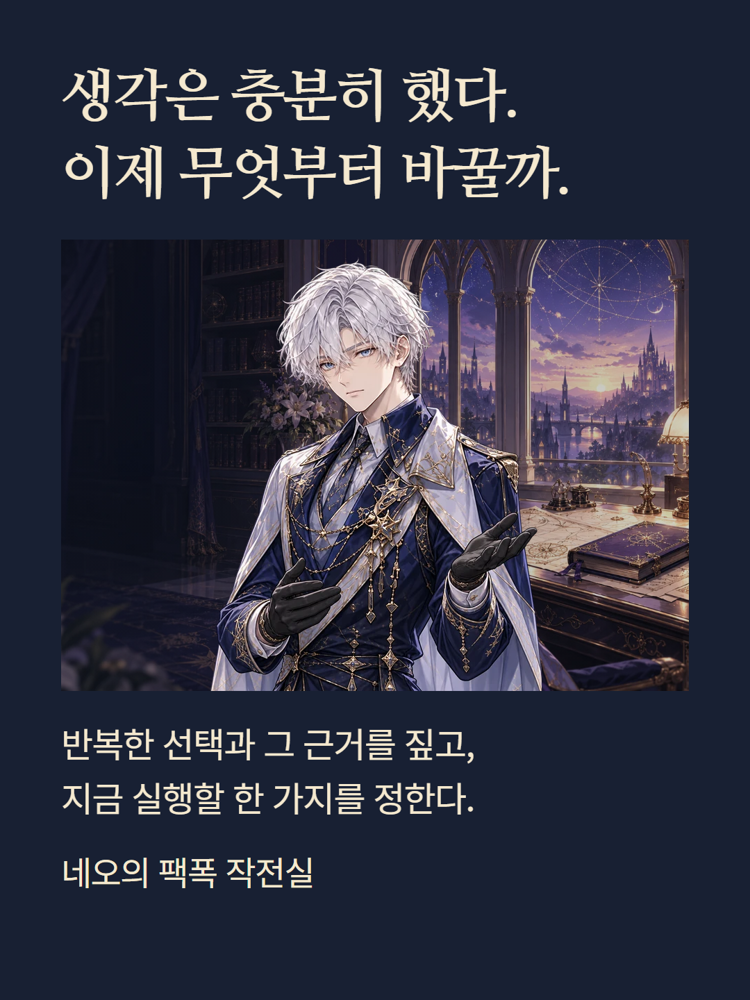
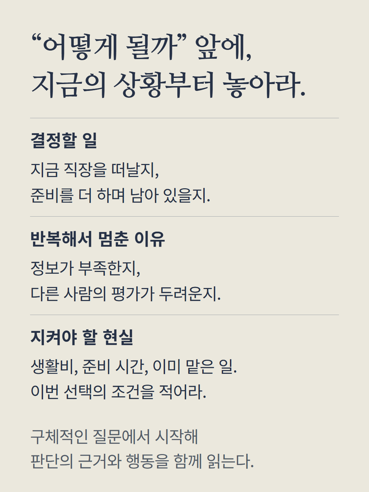
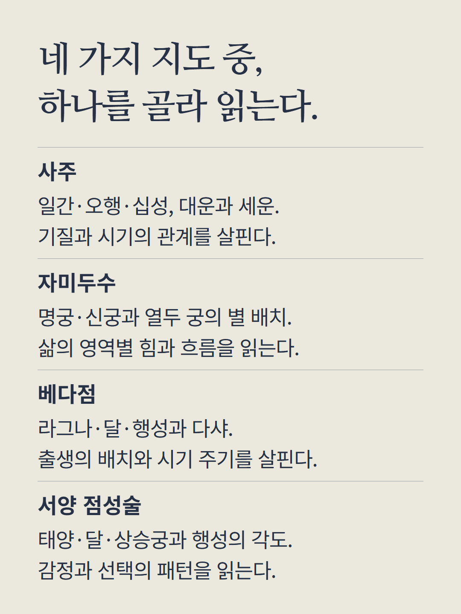
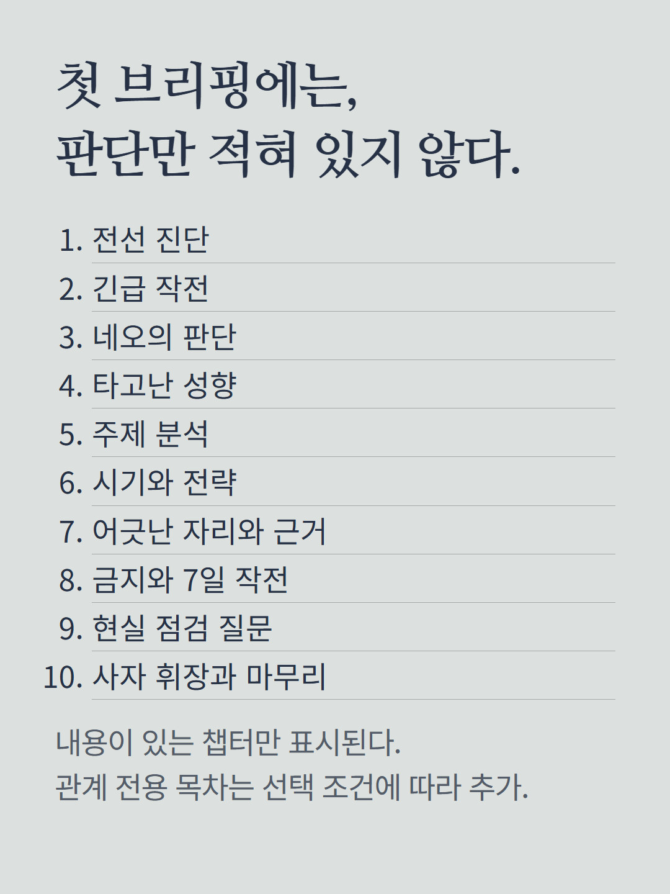
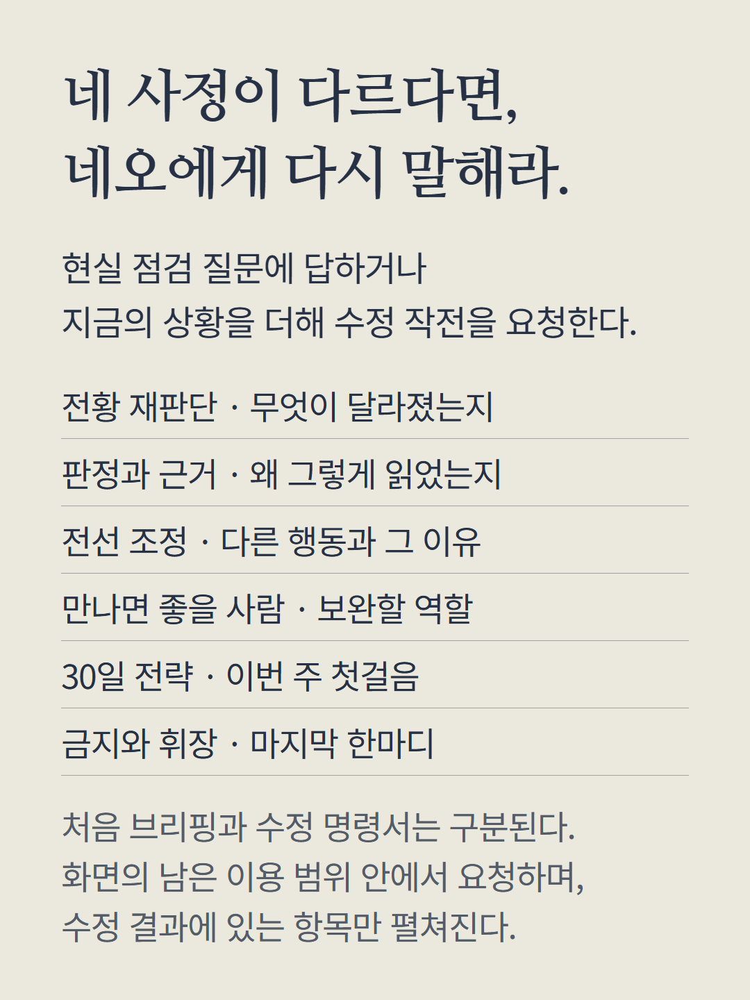
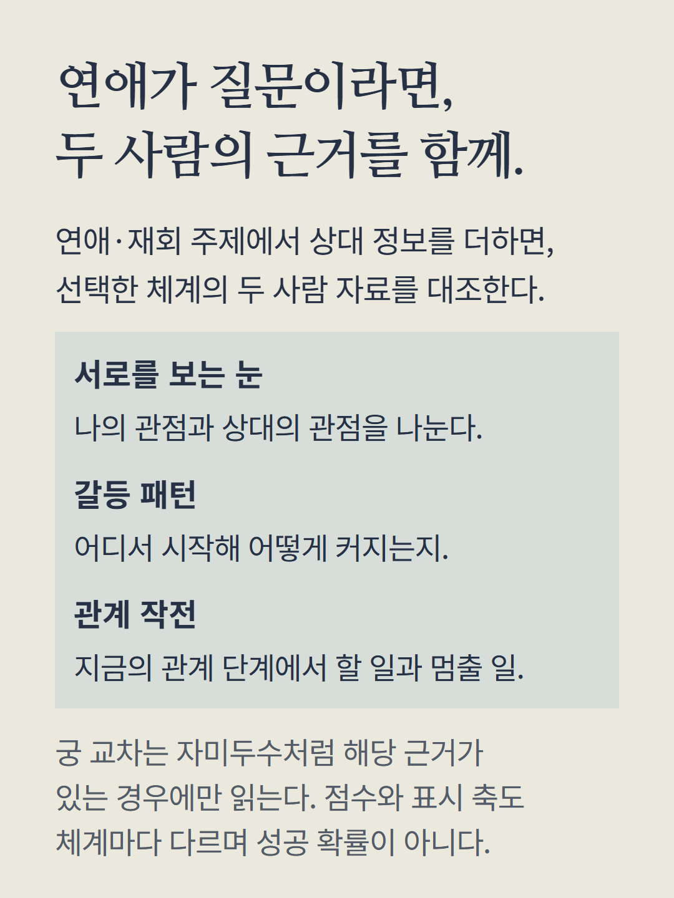
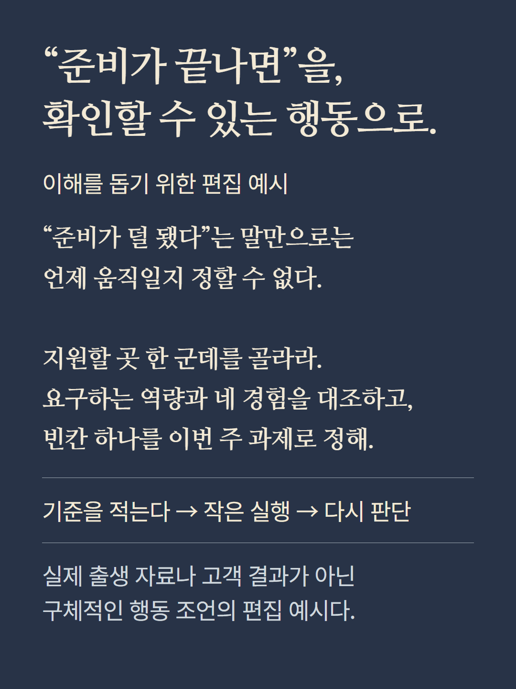
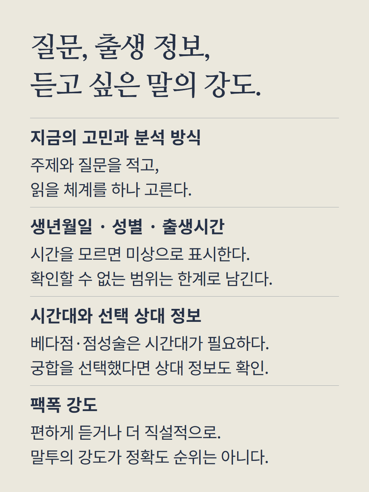
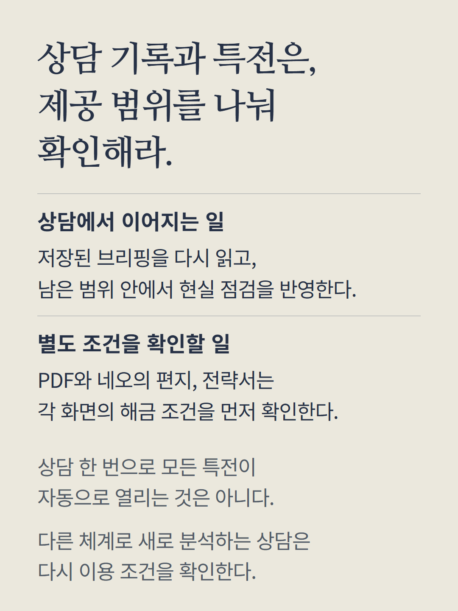
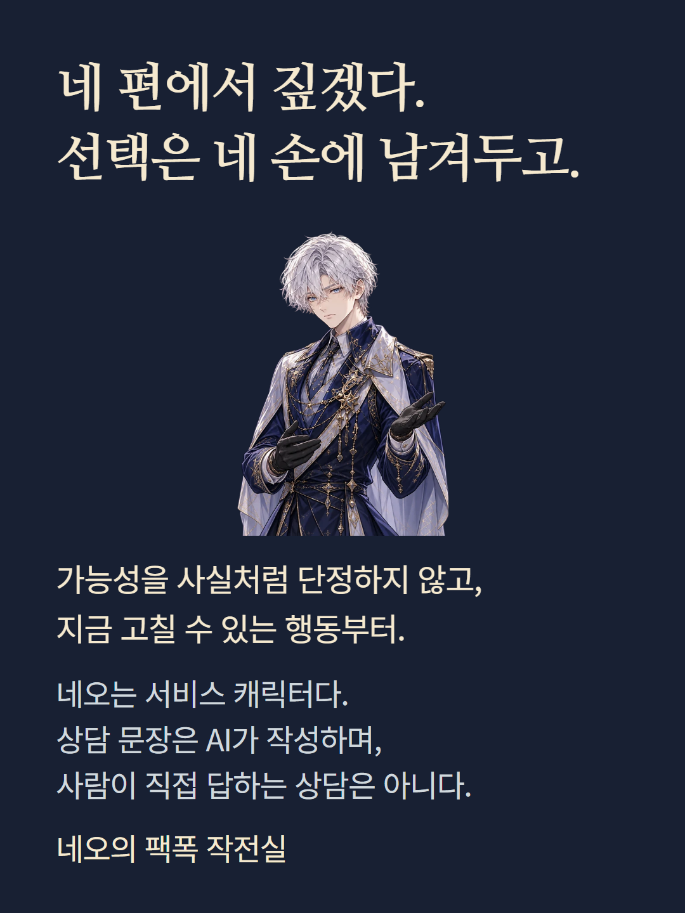

사주·자미두수·베다점·서양 점성술 중 하나를 선택해 질문을 읽는 상담입니다. 여러 체계를 한 번에 합치는 상품이 아닙니다. 목차는 결과에 있는 내용만 표시되며, 관계 전용 항목은 연애/재회 주제와 상대 정보 등 조건을 충족할 때 열립니다. 수정 명령서는 현실 점검 답변과 남은 이용 범위에 따라 요청합니다. PDF·편지·전략서는 별도 해금 조건이 있어 기본 상담에 자동 포함되지 않습니다. 안내 속 대화는 이해를 돕기 위한 편집 예시이며 실제 고객 결과가 아닙니다. 네오는 서비스 캐릭터이며 상담 문장은 AI가 작성합니다.